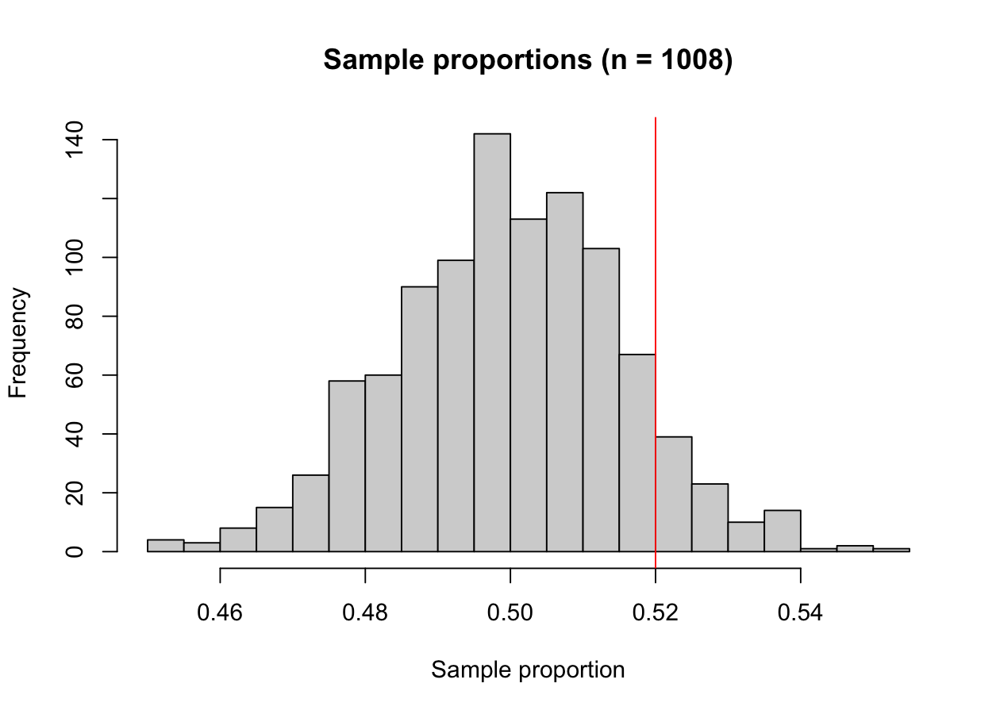
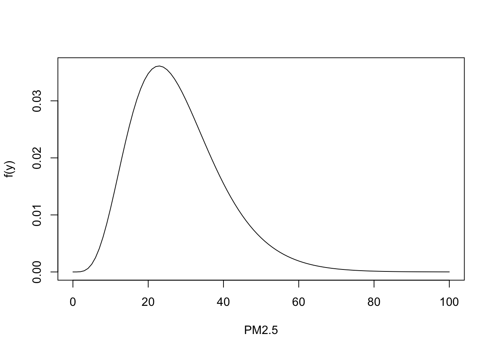
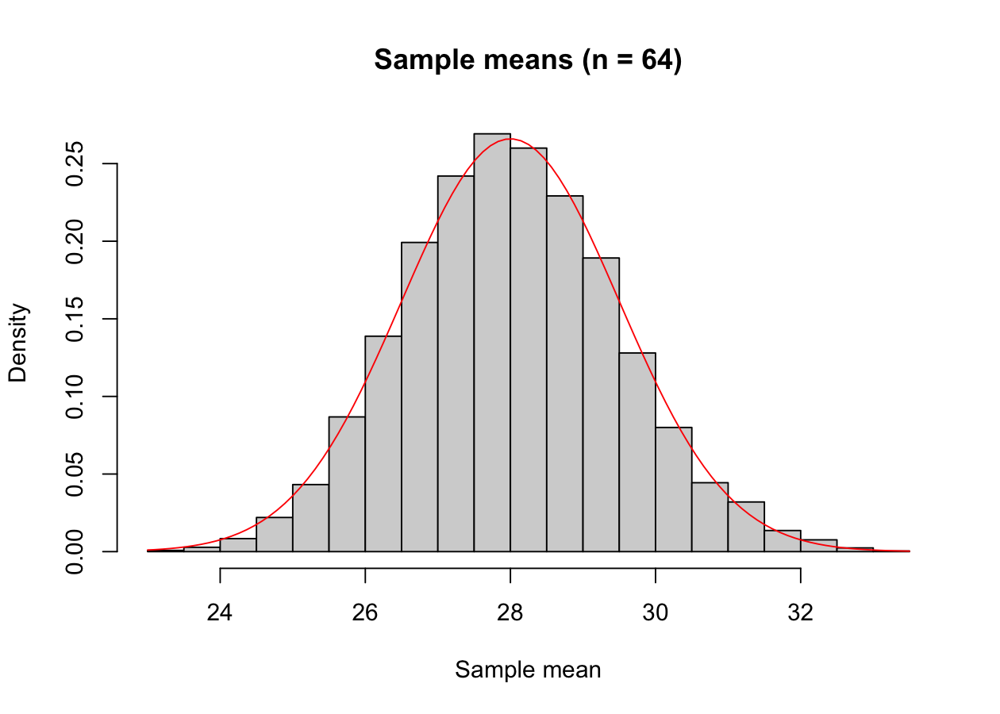

524 / 1008 # Sample proportion[1] 0.5198413Programming and Data Analysis with R
In 2019, a poll asked a random sample of n = 1008 Americans whether they thought that climate change was a major threat to the stability of the United States. A total of 524 people said yes.
524 / 1008 # Sample proportion[1] 0.5198413The sample proportion \hat{\pi} = 0.52 is a statistic. The population proportion \pi is a parameter: it is unknown, because we cannot interview all the Americans.
Suppose that \pi = 0.5. Then the number of yes in a sample of 1008 people is a \text{binom}(1008, 0.5). With rbinom (Unit H) we can simulate R = 1000 new surveys:
set.seed(123)
R <- 1000 # Number of simulated surveys
pi_hat <- rbinom(R, size = 1008, prob = 0.5) / 1008 # R sample proportions
head(pi_hat)[1] 0.4880952 0.4900794 0.5317460 0.4960317 0.5109127 0.4613095Each survey gives a different value: before collecting the data, \hat{\pi} is a random variable. Its distribution is called sampling distribution.
hist(pi_hat, breaks = 30, main = "Sample proportions (n = 1008)", xlab = "Sample proportion")
abline(v = 0.52, col = "red") # Observed sample proportion
How often does a survey give 52\% of yes or more, if \pi = 0.5?
mean(pi_hat >= 0.52) # The mean of TRUE / FALSE values is a proportion[1] 0.09About 1 survey out of 10: the observed result is not surprising, and we cannot conclude that there is a majority.
The theory says that \mathbb{E}[\hat{\pi}] = \pi, \qquad \sigma_{\hat{\pi}} = \sqrt{\frac{\pi(1-\pi)}{n}}.
The quantity \sigma_{\hat{\pi}} is the standard error: it measures how much \hat{\pi} varies from sample to sample.
mean(pi_hat) # Simulated[1] 0.499881sd(pi_hat) # Simulated[1] 0.01602631sqrt(0.5 * 0.5 / 1008) # Theoretical standard error[1] 0.01574852The standard error decreases with n. With n = 10000 people, the same 52\% would have been very surprising:
sqrt(0.5 * 0.5 / 10000)[1] 0.005An environmental agency wants to estimate the mean daily concentration \mu of PM2.5 (in µg/m³) in a city, measuring it on n = 64 random days.
From previous years, the daily concentrations have mean about 28, standard deviation about 12, and an asymmetric distribution. We describe them with a gamma distribution with these mean and standard deviation:
mu <- 28
sigma <- 12
k <- mu^2 / sigma^2 # Shape, so that the mean is mu
lambda <- mu / sigma^2 # Rate, so that the standard deviation is sigma
curve(dgamma(x, shape = k, rate = lambda), from = 0, to = 100, xlab = "PM2.5", ylab = "f(y)")
A simulated campaign of 64 days, repeated three times:
set.seed(123)
n <- 64
mean(rgamma(n, shape = k, rate = lambda))[1] 25.26655mean(rgamma(n, shape = k, rate = lambda))[1] 27.91994mean(rgamma(n, shape = k, rate = lambda))[1] 27.52819We want R = 1000 campaigns, so we use a for loop (Unit B):
y_bar <- rep(NA, R) # Empty vector, to be filled with the R sample means
for (r in 1:R) {
y <- rgamma(n, shape = k, rate = lambda) # A new campaign of n days
y_bar[r] <- mean(y) # Its sample mean is stored in position r
}The theory says that \mathbb{E}[\bar{Y}] = \mu, \qquad \sigma_{\bar{Y}} = \frac{\sigma}{\sqrt{n}}.
mean(y_bar) # Simulated[1] 28.0062sd(y_bar) # Simulated[1] 1.461561sigma / sqrt(n) # Theoretical standard error[1] 1.5The central limit theorem states that, for large n, \bar{Y} \simeq \text{N}\left(\mu, \frac{\sigma^2}{n}\right), regardless of the shape of the population. Indeed:
hist(y_bar, breaks = 30, freq = FALSE, main = "Sample means (n = 64)", xlab = "Sample mean")
curve(dnorm(x, mean = mu, sd = sigma / sqrt(n)), add = TRUE, col = "red")
The option add = TRUE draws the curve on top of the histogram.
1 - pnorm(31, mean = mu, sd = sigma / sqrt(n)) # Central limit theorem[1] 0.02275013mean(y_bar > 31) # Simulation[1] 0.025In Unit E and Unit F we saw that var divides by n - 1 and not by n. Why? Consider the two estimators of \sigma^2
\hat{\sigma}^2 = \frac{1}{n}\sum_{i=1}^n(Y_i - \bar{Y})^2, \qquad S^2 = \frac{1}{n - 1}\sum_{i=1}^n(Y_i - \bar{Y})^2.
An estimator is unbiased if its expected value equals the parameter. Let us check through simulation, with a short campaign of n = 5 days:
my_var <- function(x) mean(x^2) - mean(x)^2 # From Unit F: divides by n
set.seed(123)
n <- 5
R <- 10000
sigma2_hat <- rep(NA, R)
S2 <- rep(NA, R)
for (r in 1:R) {
y <- rgamma(n, shape = k, rate = lambda)
sigma2_hat[r] <- my_var(y)
S2[r] <- var(y)
}
c(mean(sigma2_hat), mean(S2), sigma^2)[1] 114.7748 143.4684 144.0000S^2 is unbiased, whereas \hat{\sigma}^2 underestimates \sigma^2, since \mathbb{E}[\hat{\sigma}^2] = (n-1)\sigma^2 / n = 115.2.
Unbiasedness is not everything. The mean squared error \text{MSE}(\hat{\theta}) = \mathbb{E}[(\hat{\theta} - \theta)^2] = \text{var}[\hat{\theta}] + (\mathbb{E}[\hat{\theta}] - \theta)^2 measures how close, on average, an estimator falls to the parameter:
mean((sigma2_hat - sigma^2)^2) # MSE of the biased estimator[1] 10659.73mean((S2 - sigma^2)^2) # MSE of the unbiased estimator[1] 15321.56The biased estimator has a smaller MSE: its bias is compensated by a smaller variance (the bias-variance trade-off).